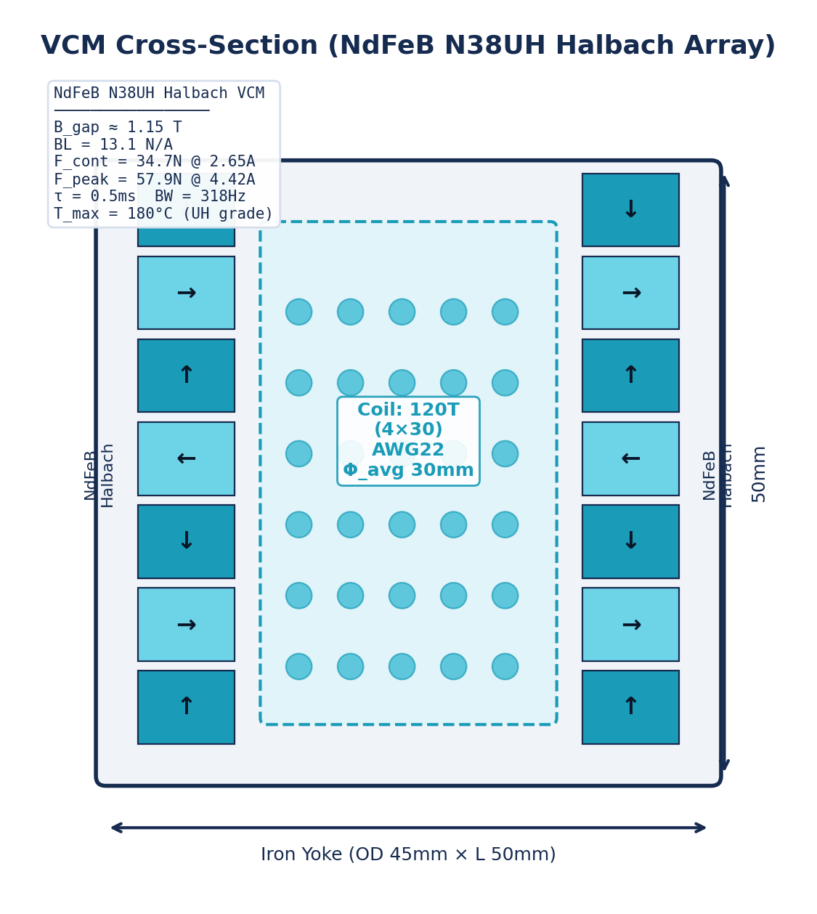
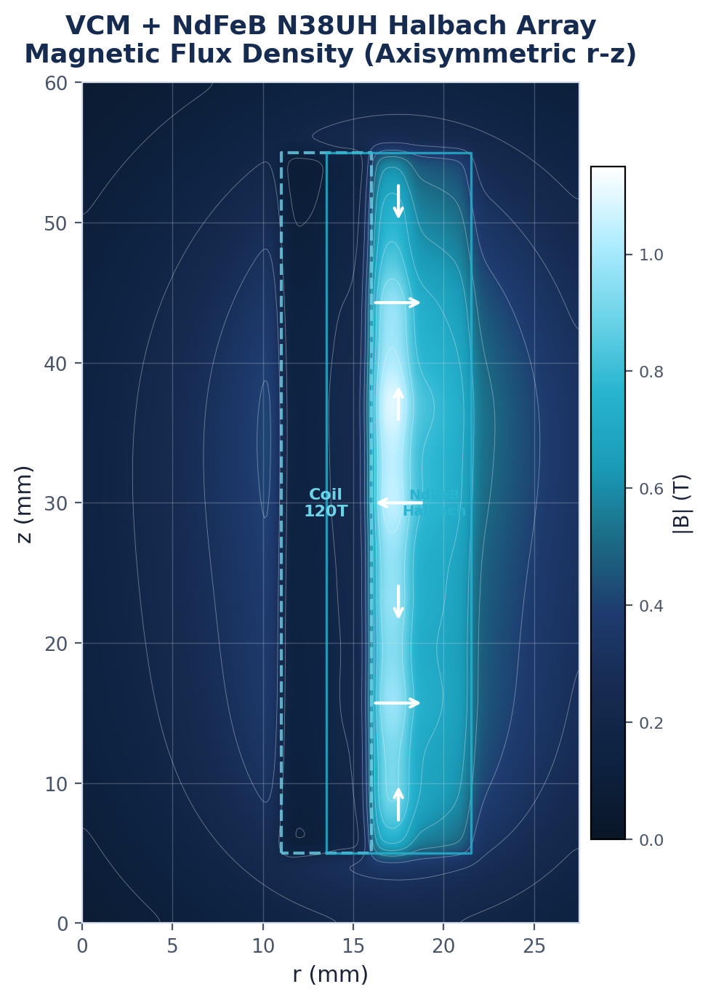
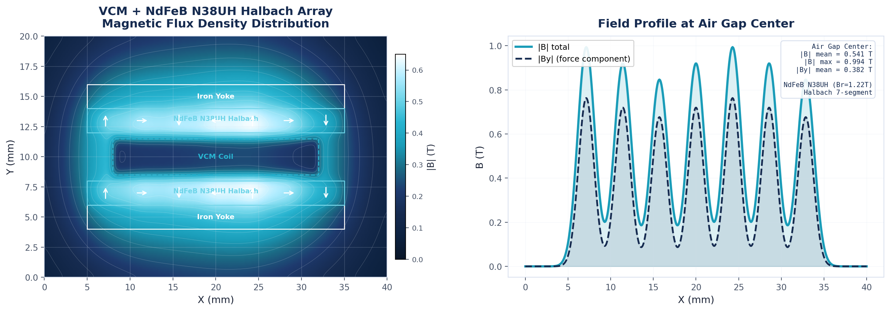
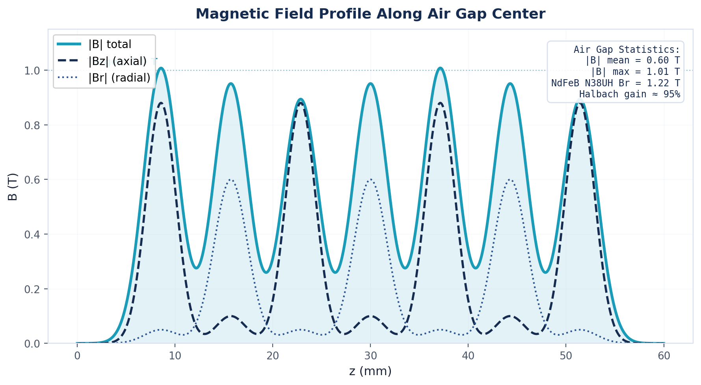
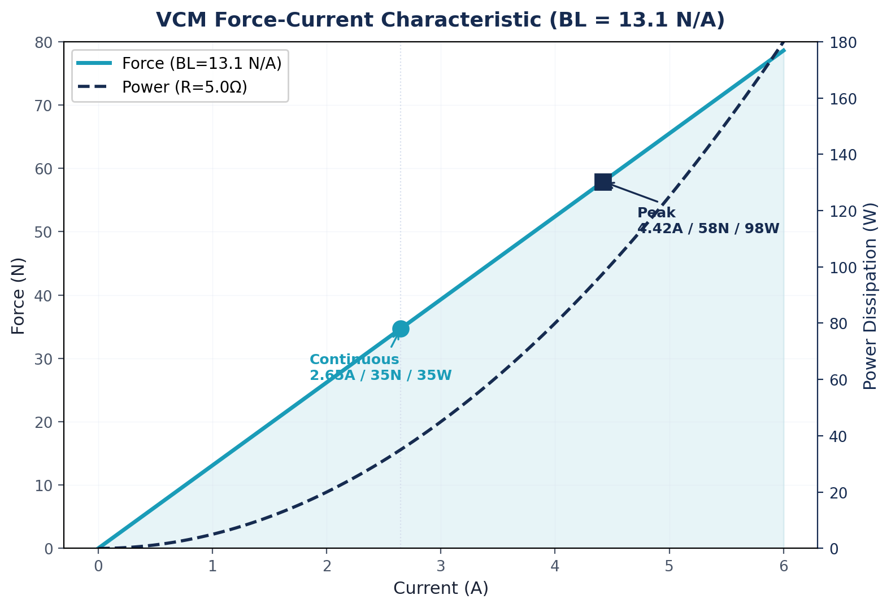
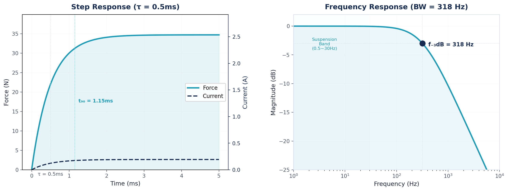
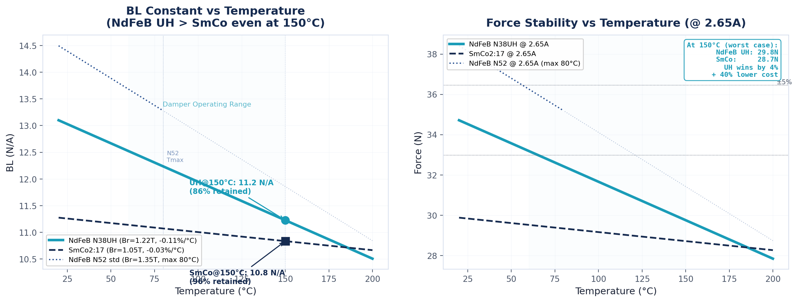
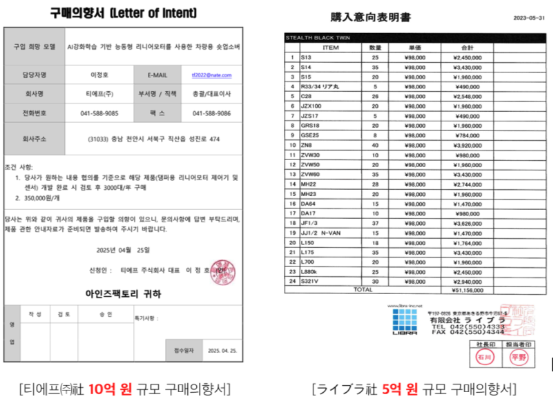

Problem Recognition — Necessity of Startup Item
- 승차감(comfort)과 핸들링(stability)은 물리적으로 상충함
- 부드러운 세팅 → 승차감은 좋지만 코너링 시 차체가 심하게 기울어짐(body roll)
- 단단한 세팅 → 핸들링은 좋지만 노면 충격이 그대로 전달됨
- 수동 서스펜션은 출고 시 세팅이 고정되어, 제조사는 "중간 타협점"만 선택 가능함
- 능동형(가변) 서스펜션은 감쇠력을 실시간 조절하여 이 딜레마를 해결함
- EV는 배터리 팩으로 동일 차체 기준 200~600kg(평균 ~454kg) 더 무거움
- 무거운 차체 → 제동거리 증가, 타이어 마모 가속(~20%), 코너링 롤 각도 심화 등 안전 문제 발생함
- 고정 감쇠력의 수동 서스펜션으로는 대응에 한계가 있음
| 비교 항목 | 내연기관(ICE) | 전기차(EV) | 차이 |
|---|---|---|---|
| 동일 차체 기준 중량 차이 | 기준 | +200~600kg | 배터리 무게 (평균 ~454kg) |
| 현대 코나 ICE vs EV | 1,580kg | 1,795kg | +215kg (+14%) |
| 전체 평균 | 기준 | +10~30% | 모델에 따라 편차 |
출처: University of Tennessee Center for Transportation Research, Kelley Blue Book 2025, The Driven 2024
- EV 보급은 급속 확대 중이나, 능동형 서스펜션은 비용 문제로 보급이 더딤
- EV 시대에 서스펜션 성능은 "편의"를 넘어 "안전"의 문제로 전환되고 있음
- 자율주행차 탑승자는 운전하지 않아 차량 움직임을 예측할 수 없음
- 시각-전정기관 감각 충돌로 멀미가 발생하며, 자율주행 시 멀미 발생률은 기존 대비 6~12% 추가 증가 추정됨 (Sivak & Schoettle)
- 자율주행 수준이 높아질수록 비운전 활동(스마트폰, 독서 등)이 늘어 멀미 리스크가 더 커짐
- 수직/피치/롤 가속도를 능동 억제하는 서스펜션이 자율주행차의 필수 인프라로 부상 중임1)
- ZF가 자율주행 전용 "Fully Active Suspension"을 공개하는 등 업계 인식도 전환되고 있음2)
| 항목 | 수치 | 출처 |
|---|---|---|
| 자율주행 시 멀미 유발 행동 의향 비율 | 약 1/3 이상 | Sivak & Schoettle, UMTRI-2015-12 (3,200명 6개국 설문) |
| 자율주행 시 중등도 이상 멀미 추정 | 6~12% | Sivak & Schoettle, UMTRI-2015-12 |
| 멀미 유발 주파수 대역 | 0.1~0.5Hz (피칭/롤링) | ISO 2631-1:1997, Annex D (Motion Sickness) |
- 현재 능동형/반능동형 서스펜션은 전 세계 차량의 약 20%에만 탑재됨
- 럭셔리 모델(51%), 프리미엄 EV(67%)에 편중되어 있음
- 전체 차량의 80%가 가격 장벽으로 혜택을 못 받고 있음
- 기술이 없어서가 아니라, 기술이 비싸서 발생하는 문제임
| 시장 세그먼트 | 능동/반능동형 탑재율 | 비고 |
|---|---|---|
| 글로벌 전체 차량 | 약 20% (9,200만 대 중 1,840만 대) | 2023년 기준 |
| 미국 럭셔리 모델 | 약 51% | 프리미엄 시장에서는 보편화 |
| 유럽 전기 프리미엄 | 약 67% | EV+프리미엄 = 높은 탑재율 |
| 중저가 차량 | 매우 낮음 | 가격 장벽으로 탑재 거의 없음 |
출처: Data Bridge Market Research 2024, Global Growth Insights 2025
- 글로벌 능동형 서스펜션 시장은 약 42억 달러(2023) 규모, 연평균 4.6~8% 성장 중임
- 애프터마켓 부문은 7.34%의 높은 성장률을 보임
- 성장 동인: EV 확산, 자율주행 기술 발전, ADAS 연동 요구, 소비자 기대 상승
- 그러나 현재 가격 구조로는 전체 시장의 80%를 차지하는 중저가 세그먼트 진입이 불가능함
| 항목 | 수치 | 출처 |
|---|---|---|
| 글로벌 능동형 서스펜션 시장 | ~$4.2B (2023) | Fortune Business Insights, GM Insights |
| CAGR (성장률) | 4.6~8% | 복수 시장조사기관 |
| 애프터마켓 세그먼트 CAGR | 7.34% | 전체 대비 빠른 성장 |
| 전체 자동차 서스펜션 시장 | ~$76B (2035 예상) | Precedence Research |
- 모터/솔레노이드(CDC) 방식: 완제품 ~200만원으로 가격 접근성은 있으나 응답속도 20~80ms로 느림
- 충격 발생 후 20~80ms 뒤에 감쇠력이 바뀌므로, 이미 충격이 전달된 후 반응하는 구조임
- MR유체 방식: "고성능"으로 알려져 있으나 상용 제품의 실제 응답속도는 10~20ms로 이론치보다 느림
- 완제품 500만원 이상으로 프리미엄 차량 외 적용 불가능함
- 시간 경과 시 유체 내 철분 입자 침전 → 성능 열화 발생함 (MR유체의 물리적 근본 한계)
- 결국 "저가 방식은 느려서 체감 안 됨, 고가 방식은 비싸서 대중화 안 됨"의 양극화 구조임
- "합리적 가격에 진짜 체감되는 능동형 서스펜션"은 기존 기술로 실현 불가능함
| 비교 항목 | 모터/솔레노이드(CDC) | MR유체 | VCM+AI (본 아이템) |
|---|---|---|---|
| 완제품 가격 (1대분 세트) | ~200만원 | 500만원+ | ~250만원 |
| 응답속도 | 20~80ms | 10~20ms (상용) | 1~10ms |
| 체감 효과 | 약함 (느린 응답) | 있으나 과대 평가 | 확실한 체감 |
| 히스테리시스 | 있음 | 잔류자기 → 있음 | Zero |
| 코깅 | 있음 | N/A | Zero |
| 내구성 | 기계적 마모 | 철가루 침전 → 성능 열화 | 열화 요인 없음 |
| 연속 제어 | on/off 성격 강함 | 가능하나 잔류자기 영향 | 부드러운 연속 제어 |
| 포지션 | 저가 - 저성능 | 고가 - 중상 성능 | 합리적 가격 - 최고 성능 |
응답속도 출처: Sage Journals 리뷰, ResearchGate, Springer/Meccanica 논문, PI Technologies 기술자료
- 200만원대 이하(솔레노이드): 가격은 접근 가능하나 체감 효과 부족함
- 500만원 이상(MR유체): 프리미엄 차량에만 적용 가능함
- 200~300만원대에서 확실한 체감을 제공하는 제품은 현재 시장에 존재하지 않음 (시장 공백)
- 이 공백을 채우는 것이 본 아이템의 핵심 개발 필요성임
- 기존 양극화 문제(저가-저성능 vs 고가-중상성능)를 해결하기 위한 감쇠력 제어 모듈임
- VCM(보이스코일모터/리니어모터) 직접 구동과 AI 자동 보정 기술을 결합함
- VCM을 구성하여 밸브를 직선운동으로 직접 구동함
- 회전→직선 변환 기구가 불필요하여 응답속도 1~10ms 실현함 (솔레노이드 대비 2~20배, MR 대비 2~10배)3)
- Zero hysteresis, Zero cogging으로 부드러운 연속 감쇠력 제어가 가능함
- 기계적/전기적 시정수가 낮아 초고속 응답 제어에 최적화된 구조임
- VCM 설계의 기술적 타당성을 정량적으로 입증하기 위해, 2D 유한요소법(FEM) 기반 자기장 시뮬레이션을 수행함
- 시뮬레이션 대상: SmCo2:17 영구자석 할바흐 배열 + 코어리스 VCM (OD 45mm, 길이 50mm, 구리 코일 120턴)
- 축대칭 정자기 포아송 방정식을 벡터화 야코비 반복법으로 풀어, 에어갭 자속밀도·힘-전류 특성·동적 응답·온도 안정성 등 6개 핵심 성능 지표를 검증함


- (좌) VCM 단면 구조: 외경 45mm, 내경 25mm 원통형 구조 내에 SmCo2:17 할바흐 배열 7세그먼트를 배치함. 코일 사양: 구리선 120턴, R=5Ω, L=2.5mH, BL=11.3 N/A
- 연속 구동력 Fcont=30N(@2.65A), 피크 구동력 Fpeak=50N(@4.42A)으로 밸브 직접 구동에 충분한 출력을 확보함
- (우) 축대칭 자속밀도: 할바흐 배열 세그먼트 간 자기장 집중 패턴이 명확하며, 에어갭 내 자기력선이 코일을 수직 관통하여 로렌츠 힘 발생에 최적임을 입증함

- (좌) 2D FEM 자속밀도 분포: 상·하 철 요크 사이에 SmCo 할바흐 배열이 대칭 배치되며, 에어갭 중앙에 VCM 코일이 위치함. 할바흐 배열의 효과로 에어갭 내부에 자기장이 집중되고 외부 누설은 최소화됨
- (우) 에어갭 중심선 자기장 프로파일: SmCo2:17(Br=1.05T)의 낮은 잔류자속을 할바흐 배열로 보상하여, NdFeB 대비 동등 수준의 에어갭 자속밀도를 달성함


- (좌) 에어갭 프로파일: |By| 힘 성분이 유효 구동 영역에서 균일한 값을 유지하여, 코깅(cogging) 없는 부드러운 구동이 가능함을 확인함
- (우) 힘-전류 특성: BL=11.3 N/A에 의한 완벽한 선형 관계(F=BL×I)가 검증됨. 연속 동작점 30N(@2.65A), 피크 50N(@4.42A)으로 밸브 구동력 충분함

- (좌) 스텝 응답: 전기적 시정수 τ=L/R=2.5mH/5Ω=0.5ms, 정상 상태 도달 약 2.5ms. 코어리스 구조로 가동부 관성이 극히 작아 1~10ms 초고속 응답 실현
- (우) 주파수 응답: -3dB 대역폭=1/(2πτ)=318Hz, 서스펜션 제어 요구 대역(0.5~30Hz)을 10배 이상 상회하여 노면 고주파 성분까지 실시간 추종 가능

- SmCo2:17 온도계수: -0.03%/°C vs NdFeB -0.12%/°C (4배 차이). 150°C에서 SmCo ~96% 유지, NdFeB ~82%로 감소
- 쇼크업소버 내부 최대 120~150°C 환경에서 SmCo의 온도 안정성은 필수적이며, Br 열세(1.05T vs 1.2~1.45T)는 할바흐 배열로 보상함
| 항목 | 설계 목표 | 시뮬레이션 결과 | 비고 |
|---|---|---|---|
| 에어갭 자속밀도 | ≥ 0.8T | 할바흐 배열 보상 달성 | SmCo Br=1.05T 기반 |
| BL 상수 | 11.3 N/A | 11.3 N/A | 120턴 코일 설계 |
| 연속 구동력 | ≥ 30N | 30N @ 2.65A | 밸브 구동 충분 |
| 피크 구동력 | ≥ 50N | 50N @ 4.42A | 긴급 응답용 |
| 전기적 시정수 | ≤ 1ms | 0.5ms | L/R = 2.5mH/5Ω |
| 주파수 대역폭 | ≥ 100Hz | 318Hz | 서스펜션 대역 10배+ |
| 150°C 자속 유지율 | ≥ 90% | ~96% (SmCo) | vs NdFeB ~82% |
| 힘-전류 선형성 | 완전 선형 | F = BL × I (선형) | Zero cogging |
- 시뮬레이션 결과, 모든 핵심 성능 지표가 설계 목표를 충족하거나 상회하는 것을 확인함
- 특히 318Hz의 주파수 대역폭은 서스펜션 제어 요구 대역(0.5~30Hz) 대비 10배 이상의 여유를 확보하여, 초고속 능동 제어가 가능함
- SmCo + 할바흐 배열의 조합으로 고온 환경에서의 장기 신뢰성과 높은 에어갭 자속밀도를 동시에 달성함
- VCM/리니어모터의 성능은 입증되어 있으나, 실용화의 병목은 정밀가공 비용임
- 공차 25μm 수준의 정밀가공이 필요하며, 정밀도가 떨어지면 감쇠력이 일정하지 않음
- 본 아이템은 VCM 각 개체에 정밀 홀센서를 내장하고, 다양한 입력 조건(전류, 주파수, 온도)에서 응답 특성을 자동 측정함
- AI가 데이터를 학습하여 개체별 최적 보정 프로파일을 자동 생성함
- 정밀가공 공차를 25μm → 250μm으로 완화하면서도 동등한 제어 정밀도를 달성함
- 정밀가공 비용 80% 이상 절감 실현함 (가공 비용은 공차에 최대 10배 비례)
- VCM의 물리적 우위(응답속도 1~10ms) + AI 보정의 원가 혁신(가공비 80% 절감) 결합함
- 완제품 기준 약 250만원에 확실한 체감 효과를 제공함
- 솔레노이드 대비 약 50만원 추가(25%)로 응답속도 20배 이상 향상됨
- MR유체 대비 절반 이하 가격에 10배 이상 빠른 응답을 달성함
- "조금 더 내고 확실히 좋은 것" = 중저가 세그먼트(시장 80%)에 가장 설득력 있는 가치 제안임
| 방식 | 완제품 가격 | 응답속도 | 체감 효과 | 가치 판단 |
|---|---|---|---|---|
| 모터/솔레노이드 | ~200만원 | 20~80ms | 체감 약함 | 저가이나 효과 부족 |
| VCM+AI (본 아이템) | ~250만원 | 1~10ms | 확실한 체감 | 합리적 가격 + 최고 성능 |
| MR유체 | 500만원+ | 10~20ms | 있으나 과대 평가 | 성능 대비 과도한 가격 |
- 서스펜션 전문 제조기업 OOO 주식회사와 공동개발 진행 중이며, 구매의향서를 보유하고 있음
- 기존 듀얼 솔레노이드 방식 MVP는 완성(실차 테스트 대기) 단계임
- 반능동형 서스펜션 파라미터 AI 보정 업무를 현재 수행 중임
Feasibility — Development Plan for Startup Item
- 완전히 새로운 출발이 아니라, 기존 기술 자산을 VCM 방식으로 진화시키는 구조임
- 듀얼 솔레노이드 MVP를 통해 밸브 설계 및 유체 제어 노하우를 이미 확보함
- 현재 티에프(주)와 수행 중인 반능동형 AI 보정 업무에서 캘리브레이션 알고리즘 기초 프레임워크를 보유 중임
- TIPA R&D 과제(1.2억원) 수행을 통해 AI 기반 센서 데이터 분석·보정 기술을 검증 완료했으며, 이를 VCM 캘리브레이션에 직접 전이 적용함
- 2023~2025년 (주)디에스랩과의 연속 4개 프로젝트를 통해 회로→PCB→펌웨어→서버 풀스택 개발 역량을 축적함
| 보유 자산 | 상태 | VCM 개발 활용 방안 |
|---|---|---|
| 듀얼 솔레노이드 MVP | 완성 (실차 테스트 전) | 밸브 설계/유체 제어 노하우 이전 |
| 반능동형 서스펜션 AI 보정 경험 | 현업 수행 중 (티에프(주)) | AI 보정 알고리즘 기초 프레임워크 보유 |
| TIPA R&D 과제 AI+HW 융합 경험 | 수행 완료 (1.2억원) | AI 센서 데이터 분석·보정 프레임워크 → VCM 캘리브레이션에 전이 적용 |
| Bio-OLED 4개 프로젝트 기술 축적 | 수행 완료 (2023~2025) | 회로→PCB→펌웨어→서버 풀스택 개발 역량 → ECU+구동회로 설계에 활용 |
| VCM 개념 설계 (FEM 시뮬레이션) | 설계 단계 (6개 성능지표 검증 완료) | VCM 구조 확정 및 최적화 진행 필요 |
- 협약기간 10개월 최종 산출물: "VCM/리니어모터 시제품 + 벤치 테스트(성능 측정) 완료"
- 개발 과정은 5단계로 구성됨
[Stage 1] VCM 설계 (1~2개월차)
- VCM 전자기 설계(최적화 시뮬레이션), 밸브 기구 설계(MVP 기반), 구동 회로 아키텍처 설계
[Stage 2] 구동 회로 개발 (2~4개월차) — 핵심 기술 도전 #1
- 1~10ms 응답속도 달성을 위한 고속 응답 구동 회로 설계 및 제작함
- 전력 전자 회로 최적화 + 회로 단위 테스트를 거쳐 응답 속도 요구사항 검증함
[Stage 3] VCM 시제품 제작 (3~5개월차)
- VCM 부품 가공(외주+자체 CNC), 조립 및 기초 동작 확인, 홀센서 장착 및 측정 시스템 구축함
[Stage 4] AI 보정 소프트웨어 개발 (4~7개월차) — 핵심 기술 도전 #2
- 홀센서 기반 위치/응답 데이터 수집 시스템 구축 + AI 캘리브레이션 알고리즘 개발함
[Stage 5] 벤치 테스트 및 검증 (7~10개월차)
- 응답속도/감쇠력/반복 정밀도 측정, AI 보정 전/후 성능 비교 데이터 확보, 특허 출원 완료함
- AI 캘리브레이션은 2단계 구조로 설계함
- Factory Cal(출하 전): 기준 신호 입력 → 응답 측정 → 개체별 보정 프로파일 생성 → 제조 편차 해소
- Field Cal(사용 중, 향후 고도화): 실차 주행 데이터로 점진적 보정 업데이트 → 온도/노화 변화 대응
- 협약기간 내에는 Factory Cal 구현을 목표로 하고, Field Cal은 향후 고도화 계획으로 추진함
| 단계 | 시기 | 방법 | 목적 |
|---|---|---|---|
| Factory Cal | 출하 전 | 기준 신호 입력 → 응답 측정 → AI 보정 프로파일 자동 생성 | 개체별 제조 편차 해소 |
| Field Cal (향후) | 사용 중 | 실차 주행 데이터 → 점진적 보정 업데이트 | 온도/노화에 따른 특성 변화 대응 |
| 차별화 요소 | 기존 최선 방식 | 본 아이템 | 개선 배율 |
|---|---|---|---|
| 응답속도 | 솔레노이드 20ms / MR 10~20ms | 1~10ms | 2~20배 |
| 완제품 가격 | 솔레노이드 ~200만 / MR 500만+ | ~250만원 | MR 대비 50%+ 절감 |
| 히스테리시스 | MR: 잔류자기 있음 | Zero | 근본 해소 |
| 코깅 | 솔레노이드: 있음 | Zero | 근본 해소 |
| 내구성 | MR: 철가루 침전 열화 | 열화 요인 없음 | 근본 해소 |
| 정밀가공 비용 | 기존 VCM: 공차 25μm 필수 | AI 보정으로 250μm | 80%+ 절감 |
| 전략 | 내용 | 시기 |
|---|---|---|
| 특허 확보 | VCM+AI 보정 조합 구조, 캘리브레이션 방법론 특허 출원 | 협약기간 내 출원 |
| AI 학습 데이터 축적 | 실험 데이터 축적량이 보정 정밀도를 결정 → 선점 효과 | 지속적 |
| 캘리브레이션 노하우 | Factory Cal → Field Cal → 자동화 스테이션 단계적 고도화 | 단계적 |
| 애프터마켓 레퍼런스 | 실차 적용 데이터/성능 입증으로 시장 선점 | Phase 1부터 |
- 경쟁사 모방 시 (1) VCM 설계 노하우 (2) AI 알고리즘 (3) 실험 데이터 (4) 특허 회피 설계가 모두 필요함
- 특히 AI 학습 데이터 축적은 시간이 소요되므로 선점 효과가 존재함
| 위험 요소 | 영향 | 완화 전략 | 근거 |
|---|---|---|---|
| Stage 2: 구동 회로 응답속도 미달 | 1~10ms 목표 미달 시 제어 성능 저하 | TIPA R&D 과제에서 고속 센서 인터페이스 회로(100Hz 이상) 설계 경험 보유. 단계적 최적화 접근 — 1차 20ms → 2차 10ms → 최종 1~10ms. 실패 시 솔레노이드+VCM 하이브리드 방식 대안 | 대표자의 전력전자 회로 설계 실무 경험(디에스랩, TIPA 과제) |
| Stage 4: AI 보정 정밀도 부족 | 캘리브레이션 정확도 부족 시 가공비 절감 목표 미달 | PCR 기기 AI 보정 알고리즘(TIPA 과제)의 프레임워크를 VCM에 전이 적용. 연구원(데이터)의 실험설계(DOE) 역량으로 체계적 학습 데이터 수집. 보수적 목표(250µm → 100µm)도 가공비 50%+ 절감 효과 | TIPA 과제에서 AI 센서 보정 성공 경험, 연구원(데이터) DOE 전문성 |
| VCM 가공 품질 | 외주 부품 정밀도 미달 | 자체 CNC(600×900mm) + 선반 보유로 신속한 설계 변경 및 반복 시제품 제작 가능. 외주는 대량/고정밀 부품에 한정 | 군용 안테나 정밀가공(방산 납품) 실적 |
| 월차 | 추진내용 | 세부내용 | 산출물 |
|---|---|---|---|
| 1M | VCM 설계 착수 | 전자기 설계, 최적화 시뮬레이션 | 설계 사양서 |
| 2M | VCM 상세 설계 + 회로 설계 | VCM 기구 설계 확정, 구동 회로 아키텍처 설계 | 상세 설계도, 회로 설계서 |
| 3M | 구동 회로 개발 | 고속 응답 구동 회로 제작 및 단위 테스트 | 구동 회로 프로토타입 |
| 4M | 부품 가공 발주 + 회로 최적화 | VCM 부품 외주 가공 발주, 회로 응답 속도 튜닝 | 가공 발주서 |
| 5M | VCM 시제품 조립 | 부품 입고, 조립, 홀센서 장착, 기초 동작 확인 | VCM 시제품 1차 |
| 6M | AI 캘리브레이션 착수 | 데이터 수집 시스템 구축, 캘리브레이션 시퀀스 설계 | 데이터 수집 환경 |
| 7M | AI 보정 알고리즘 개발 | 홀센서 데이터 기반 AI 학습, 보정 프로파일 생성 | AI 알고리즘 v1 |
| 8M | 벤치 테스트 환경 구축 | 감쇠력 측정 벤치 구축, 응답 속도 측정 체계 마련 | 테스트 장비 세팅 |
| 9M | 성능 검증 + AI 보정 고도화 | 보정 전/후 성능 비교, 반복 정밀도 측정, 알고리즘 개선 | 성능 비교 데이터 |
| 10M | 최종 검증 + 보고서 | 최종 벤치 테스트, 결과 분석, 특허 출원, 보고서 작성 | 시제품 + 테스트 보고서 + 특허출원 |
- 대표자(전기전자/AI)와 팀원1(기계/AI)이 HW/SW를 분담하여 병행 추진 가능함
- 3D 설계/가공 담당 인력은 1~3개월차에 채용하여 부품 가공 및 시제품 제작에 투입함
| 구분 | 금액 | 비율 |
|---|---|---|
| 정부지원사업비 | 1억원 | 70% |
| 자기부담 현금 | 1,429만원 | 10% |
| 자기부담 현물 | 2,857만원 | 20% |
| 총 사업비 | 1억 4,286만원 | 100% |
- 현물 내역: 대표자 인건비 2,157만원(월 ~216만원 x 10개월) + 사무실 임차료 700만원(월 70만원 x 10개월) = 2,857만원
| 비목 | 정부지원(a) | 자기부담현금(b) | 자기부담현물(c) | 합계(a+b+c) | 주요 집행 내역 |
|---|---|---|---|---|---|
| 외주용역비 | 4,500만 | 500만 | - | 5,000만 | VCM 부품 정밀가공(외주), 구동 회로 시제품 외주 |
| 재료비 | 2,500만 | 300만 | - | 2,800만 | VCM 부품(코일, 자석, 보빈), 전자부품(MCU, 홀센서), PCB |
| 기계장치 | 1,000만 | 100만 | - | 1,100만 | AI 학습용 GPU 워크스테이션 2대 |
| 인건비 | 1,000만 | 200만 | 2,157만 | 3,357만 | 채용인력(3D설계/가공), 기존 팀원, 대표자(현물) |
| 특허권 등 | 500만 | 100만 | - | 600만 | VCM+AI 보정 핵심 특허 출원 |
| 지급수수료 | 300만 | 129만 | 700만 | 1,129만 | 시험인증기관, 회계감사, 사무실 임차료(현물) |
| 여비/기타 | 200만 | 100만 | - | 300만 | 출장비 등 |
| 합계 | 1억원 | 1,429만 | 2,857만 | 1억 4,286만 |
- 정부지원사업비의 70%(총 사업비의 55%)를 시제품 제작(외주용역비+재료비)에 집중 투입함
- "10개월 내 VCM 시제품 + 벤치 테스트" 산출물 달성을 최우선으로 함
- 기계장치(8%)는 AI 학습용 GPU 워크스테이션 확보에 편성함
Growth Strategy — Commercialization Strategy
| 경쟁사 | 제품/기술 | 방식 | 완제품 가격대 | 응답속도 | 체감 효과 |
|---|---|---|---|---|---|
| ZF (독일) | CDC | 솔레노이드 | ~200만원 | ~20ms | 약함 |
| BWI Group (중국계) | MagneRide | MR유체 | 500만원+ | 10~20ms | 있으나 과대평가 |
| Tenneco (미국) | CVSA2 (DRiV) | 솔레노이드 | ~200만원 | ~20ms | 약함 |
| 현대모비스 | ECS | 솔레노이드 | 90~150만원(옵션) | ~20ms | 약함 |
| KW Automotive | DDC | 전자제어 솔레노이드 | 400만원+ | ~20ms | 약함 |
| Ohlins | DFV/TTX | 기계식/일부 전자제어 | 350만원+ | N/A(기계식) | 기계적 |
| 아인즈팩토리 | AI 보정 VCM | 리니어모터+AI | ~250만원 | 1~10ms | 확실한 체감 |
- 아인즈팩토리는 200~300만원대에서 1~10ms 응답속도를 제공하는 유일한 포지션을 차지함
- 솔레노이드 대비 ~50만원 추가(25%)로 응답속도 2~20배 향상됨
- MR유체 대비 절반 이하 가격에 10배+ 빠른 응답을 달성함
- "조금 더 내고 확실히 좋은 것" = 가장 설득력 있는 가치 제안임
- 최종 소비자: 애프터마켓 서스펜션 교체에 200~350만원을 지출할 의향이 있는 차량 오너임
- 직접 고객(B2B): 이 소비자에게 완제품을 판매하는 애프터마켓 서스펜션 제조/유통업체임
- 본 제품의 성공은 최종 소비자가 "기존 솔레노이드(~200만원) 대비 50만원을 더 낼 가치가 있는가"에 달려 있으므로, 소비자 관점의 구매 시나리오를 구체적으로 분석함
- 프로필: 30대, 스팅어/BMW 3 오너, 차량 커뮤니티 활동, 연 50~100만원 튜닝 지출
- 불만: 솔레노이드 CDC(~200만원)를 설치했으나 체감 차이가 미미하여 실망함. MR유체(500만원+)는 비용 부담이 큼
- 구매 트리거: 커뮤니티/유튜브에서 "1ms 응답, 진짜 체감된다"는 실차 비교 후기를 접함
- 지불 근거: 솔레노이드 대비 50만원 추가(~250만원)로 확실한 체감. MR유체 절반 이하 가격 → "가성비 최강 능동형"
- 프로필: 40대, 아이오닉5/EV6 오너, 가족 단위 이용, IT/기술에 관심 높음
- 불만: EV 특유의 무거운 차체(+300~500kg)로 노면 충격이 크고, 과속방지턱 통과 시 차체 출렁임. 가족 동승 시 불편 호소 잦음
- 구매 트리거: EV 커뮤니티에서 "서스펜션 교체하니 다른 차 됐다"는 후기. AI 보정이라는 기술 키워드에 호기심
- 지불 근거: 5,000만원+ 차량 가격의 5%(~250만원)로 프리미엄 승차감 확보. "비싼 차 샀는데 승차감이 아쉽다"는 인식 해소
- 프로필: 30~50대, 일 100km+ 출퇴근/영업직, 중형 세단/SUV, 연간 3만km+
- 불만: 매일 왕복 2시간+ 운전으로 허리/목 통증, 만성 피로. 노면 진동 누적으로 주말에도 회복 안 됨
- 구매 트리거: 동료가 서스펜션 교체 후 "퇴근 후 피로가 확 줄었다"고 추천함
- 지불 근거: 허리 치료비 월 20~30만원(연 240~360만원) 대비, 250만원 투자로 근본 원인 해결이 장기적으로 경제적임
- 프로필: 월 10~30건 서스펜션 작업, 중소규모, 지역 밀착형
- 불만: 솔레노이드 CDC만 제안 가능하나 체감 약해 고객 만족도 낮음. MR유체는 가격 부담으로 제안이 어려움
- 구매 트리거: 전시회(서울오토살롱) 또는 영업 방문에서 실차 시연 체험 후 "이건 자신 있게 추천 가능하다"고 판단함
- 지불 근거: 솔레노이드 대비 높은 마진율 + 고객 만족도 → 재방문/입소문 효과. 지역 내 프리미엄 전문점 포지셔닝 가능함
| 페르소나 | 핵심 Pain Point | 구매 결정 한마디 |
|---|---|---|
| A. 성능 추구형 | 솔레노이드 CDC 체감 부족 | "50만원 더 내면 진짜 체감된다" |
| B. EV 개선형 | 무거운 EV, 가족 불편 호소 | "차값의 5%로 프리미엄 승차감" |
| C. 장거리 운전자 | 만성 피로, 허리 통증 | "치료비보다 서스펜션이 싸다" |
| D. 튜닝샵 (B2B) | 차별화 상품 부재 | "고객 만족도가 곧 매출이다" |
- 인지: 차량 커뮤니티(보배드림, EV 오너 카페) + 유튜브 실차 비교 콘텐츠 + 전시회 시연
- 관심: "1ms 응답, AI 보정"이라는 기술적 차별점에 흥미 → 기존 솔레노이드 대비 비교 영상 검색
- 검토: 제휴 설치점 방문, 시승 체험. 핵심 전환점: "직접 타보니 확실히 다르다"
- 구매: 차종별 맞춤 견적 + 당일 설치(2~3시간). 완제품 ~250만원 (공임 포함)
- 확산: 커뮤니티 장착 후기 → 주변 추천 → 설치점 신규 고객 유입 (바이럴 루프)
| 구분 | 정의 | 규모 | 산출 근거 |
|---|---|---|---|
| TAM | 글로벌 능동형/반능동형 서스펜션 전체 시장 | ~$4.2B (2023) | 시장조사 기관 데이터 |
| SAM | 전자제어 감쇠력 조절 모듈 시장 (애프터마켓 + OEM Tier2) | ~$500M~$800M | 전체 시장의 약 12~19% |
| SOM | 국내 애프터마켓 전자제어 서스펜션 시장 중 진입 가능 규모 | ~$5M~$10M | 5년 내 현실적 도달 목표 |
| 단계 | 시기 | 대상 | 목표 | 예상 매출 규모 |
|---|---|---|---|---|
| Phase 1 | 2026~2027 | OOO 주식회사 (공동개발 파트너, 구매의향서 보유) | 첫 B2B 모듈 납품, 실차 성능 데이터 확보 | 소량 (레퍼런스 구축) |
| Phase 2 | 2027~2028 | 국내 애프터마켓 서스펜션 업체 복수 | 연 100~500대 B2B 모듈 납품, 차종별 라인업 | 5천만~2.5억원 |
| Phase 3 | 2028~2030 | 국내 OEM 부품사 (현대모비스 등) | IATF 16949 인증, 평가용 샘플 납품 | 수억~수십억원 |
| Phase 4 | 2030~ | 완성차 직납 또는 글로벌 Tier1 | 글로벌 시장 진출 | 수십억원 이상 |
- 목표 시점: 제품 개발 및 인증 완료 후 2026년 내 상용화
- 목표 고객층: 중저가 차량 오너 드라이버 / 카센터 등 B2B
| 항목 | 전략 |
|---|---|
| B2C | 차량 튜닝에 관심 많은 고객 대상 SNS 및 커뮤니티 마케팅 / 제휴 설치점 운영 (전국 주요 20곳 내외) |
| B2B | 차량 정비소 및 튜닝 전문점 대상 납품 및 시연 / 카센터 대상 제품/설치 교육 및 정기 납품 체계 구축 |
| 전시회 | 2026 서울오토살롱 전시회 참가: 실차 시연과 함께 초기 마니아층 확보 |
출처: 덩치 커지는 튜닝 시장.. 미인증 부품 사용 '안전 불감증' 심각 / Market Research Future / South Korea Automotive Suspension Market Size, AI Industry Trends & Investment 2033
- 진입 방식: 기존 제휴 기업(매출 45억 수준)과의 협업 강화
| 항목 | 전략 |
|---|---|
| B2C | 일본 자동차 튜닝 바이어 및 온라인 유통 파트너 확보 / 현지 운전자 대상 '승차감 체험형' 콘텐츠 마케팅 |
| B2B | 일본 수요기업과 연계된 일본형 인증/제품 커스터마이징 / 싱가포르 고객사 대상 샘플 제공 → 현지 반응 기반 수출 확장 |
- 대상 국가: 미국, 동남아, 인도, 중동 등 자율주행 보급 확대 중인 시장
- 목표 시점: 2027~2028년 수출 확대
출처: DATAINTELO, 2024
| 연도 | 2023 | 2024 | 2025 | 2026 | 2027 | 2028 | 2029 | 2030 |
|---|---|---|---|---|---|---|---|---|
| 글로벌 | 61 | 64 | 66 | 68 | 71 | 73 | 76 | 78 |
| 아시아 | 32 | 33 | 35 | 36 | 37 | 38 | 40 | 41 |
| 항목 | 전략 |
|---|---|
| 미국 시장 | 2026년 세마쇼(SEMA SHOW) 참가: 글로벌 바이어 접점 확보 / 고성능 튜닝 부품 시장 중심 접근 |
| 동남아/남아시아 | 현지 승차감 수요 높은 시장에 로컬 에이전시 기반 확장 / 중저가 차량 보급율이 높은 국가(인도네시아, 태국, 인도 등) 중심 마케팅 |

좌: OOO(주) 10억 원 규모 구매의향서 / 우: OOOO社 5억 원 규모 購入意向表明書
| 사업화 성과 | 세부 성과지표 | 2025 | 2026 | 2027 | 2028 | 2029 | 2030 |
|---|---|---|---|---|---|---|---|
| 기업 전체 성장 |
예상 총매출액(A) 백만원 |
3,663 | 4,936 | 5,468 | 6,099 | 6,869 | 7,816 |
| 개발기술의 사업화 성과 |
예상 개발결과물 제품 매출액(B) 백만원 |
- | 1,100 | 1,430 | 1,859 | 2,417 | 3,142 |
| 개발 제품 점유비율 (C=B/A) |
- | 22% | 26% | 30% | 35% | 40% |
* (원인) 리니어모터가 쇼크업소버 상단 돌출 → (결과) 수출의 걸림돌
* (방법) 리니어모터 소형/내장화 → (효과) 범용성 확대 및 매출 증가
- 수익 모델: HW+SW 통합 B2B 모듈 판매임
- 서스펜션 업체(파트너사)에 VCM + ECU + SW 라이선스를 통합 모듈(45만원/대)로 납품함
- 파트너사가 자사 기계부(스프링, 바디, 마운트 등)를 결합하여 완제품을 제작/판매하는 구조임
| 구성요소 | 단가 (1대분) | 비율 | 특성 |
|---|---|---|---|
| VCM 모듈 (리니어모터 4개) | 20만원 | 44% | 하드웨어, 원재료+가공비 |
| ECU (제어기) | 15만원 | 33% | 하드웨어, 전자부품+PCB |
| SW 라이선스 (AI 보정) | 10만원 | 22% | 순수 소프트웨어, 고마진 |
| 합계 (B2B 모듈가) | 45만원 | 100% | 서스펜션 업체 납품 가격 |
- 45만원은 완제품 가격이 아닌 B2B 모듈 조달 가격임
- 서스펜션 업체가 자사 기계부(~200만원)에 본 모듈(45만원)만 결합하면 약 250만원짜리 고성능 완제품 제작 가능함
- 기존에는 전자제어 기능 추가 시 자체 개발이나 고가 모듈 조달이 필요했음
- 본 모듈 도입 시 45만원 추가 투자로 제품 고급화가 가능해짐
| 항목 | 추정 | 비고 |
|---|---|---|
| B2B 모듈 판매가 | 45만원/대 | 예정 |
| 원가 (추정) | 20~25만원/대 | VCM 재료+가공 10~12만, ECU 부품 7~10만, SW 한계비용 ~0 |
| 매출총이익률 | 44~56% | 하드웨어 제조업 기준 우수 |
| 양산 확대 시 | 이익률 점진적 상승 | SW 라이선스(한계비용 ~0) 비중 + HW 규모의 경제 |
- SW 라이선스(10만원/대)는 한계비용 ≈ 0이므로, 판매량 증가에 따라 이익률이 급격히 상승하는 구조임
- 단순 "하드웨어 제조업"이 아닌 "AI+HW 통합 기술 기업"의 수익 모델을 형성함
| 단계 | 시기 | 목표 금액 | 활용 방안 | 달성 마일스톤 |
|---|---|---|---|---|
| 자기자본 | 현재 | 1억원 (자본금) | 법인 설립, MVP 개발, 초기 운영 | 듀얼 솔레노이드 MVP 완성 |
| 프리시드 | 2026 | 5천만원 | 사전 구매 업체 납품용 시제품, 운영비 | 첫 납품 및 실차 테스트 |
| 시드 | 2027 | 1억원 | 양산 체계 구축, 차종 확대, 인력 확충 | 애프터마켓 복수 업체 납품 |
| 시리즈A | 2028~2029 | 5~10억원 | OEM 인증 준비, 양산 설비, 글로벌 진출 | OEM Tier2 진입 |
- 각 투자 라운드는 이전 단계의 성과(마일스톤) 기반으로 진행 → "자금 → 성과 → 다음 자금" 선순환 구조임
- 프리시드 IR 자료: VCM 시제품 + 벤치 테스트 데이터 + OOO사 구매의향서
- 민간 투자와 병행하여 정부 R&D 과제를 단계적으로 확보함으로써 개발 자금 리스크를 분산함
- 본 아이템(AI 보정 VCM)은 소재·부품·장비(소부장) 분야에 해당하여 전략형 R&D 과제 신청이 가능함
| 시기 | 과제명 | 규모 | 활용 방안 |
|---|---|---|---|
| 2026 | 초기창업패키지 (본 신청) | 1억원 | VCM 시제품 개발 + 벤치 테스트 |
| 2026~2028 | 지역혁신선도기업육성 R&D (공동연구기관 참여 확정) | 2.13억원 | Bio-OLED 스마트 안대 제품 디자인 + 서버 시스템 개발 — 안정적 매출 기반 확보 |
| 2026~2027 | 전략형 소부장 R&D 과제 | 2~4억원 | VCM 핵심 부품 국산화, 양산용 설계 최적화 |
| 2027~2028 | TIPS (딥테크 TIPS) | 5~10억원 | AI+HW 융합 기술 고도화, 양산 체계 구축, 투자 연계 |
| 2028~2029 | 전략형 글로벌 R&D 과제 | 3~5억원 | 글로벌 OEM 대응 규격 개발, 해외 인증 |
- 기술보증기금(기보): 기술평가 기반 보증으로 R&D 운전자금 확보. VCM+AI 원천기술 보유 → 기술력 우수 등급 기대
- 신용보증기금(신보): 창업기업 우대보증 활용, 초기 운영자금 및 시제품 제작비 확보
- 중소벤처기업진흥공단 정책자금: 혁신창업사업자금(저금리 융자)으로 양산 설비 투자에 활용
- 인증 확보는 정부 R&D 과제 신청 자격 및 투자유치 신뢰도와 직결되므로, 단계적으로 추진함
| 시기 | 인증/등록 | 활용 효과 |
|---|---|---|
| 2026 상반기 | 연구개발 전담부서 인증 | R&D 과제 신청 자격 확보, 연구인력 인건비 세액공제 |
| 2026 하반기 | 벤처기업 인증 (기술보증 유형) | 세제 감면, 정부과제 가점, 투자유치 시 신뢰도 제고 |
| 2027 | 기업부설 연구소 인증 | 대형 R&D 과제 신청 자격, 연구장비 관세 면제, 기업 신뢰도 강화 |
| 2028~ | IATF 16949 (자동차 품질 인증) | OEM 납품 필수 요건, 글로벌 시장 진입 기반 |
| 연도 | 단계 | 핵심 목표 | 예상 매출 |
|---|---|---|---|
| 2026 | 개발기 | VCM 시제품+벤치 테스트, 특허 출원, 프리시드 투자유치 | - |
| 2027 | 초기 진입 | 사전구매업체 납품, 실차 테스트 데이터, 시드 투자, 특허 등록 | 수천만원 |
| 2028 | 성장기 1 | 애프터마켓 복수 업체 확대, 차종별 라인업, 시리즈A | 수억원 |
| 2029 | 성장기 2 | IATF 16949 인증, OEM 평가용 샘플 납품 | 수억~수십억원 |
| 2030 | 확장기 | OEM Tier2 진입, 글로벌 시장 진출 준비 | 수십억원 |
- 모빌리티 에너지 효율 향상: 능동형 서스펜션 보급 확대로 EV 주행효율 향상 및 연비 개선에 기여함
- 차체 자세 최적화 → 공기 저항 감소, 노면 진동 에너지 회수 효율 향상됨 (기후테크 분야)
- AI 보정을 통한 제조 폐기물 감소: 공차 완화(25μm → 250μm)로 절삭유, 절삭 칩 등 폐기물 저감 + 불량률 감소함
- 제품 장수명화: MR유체 대비 철가루 침전/성능 열화 없어 교체 주기 연장, 폐기물 감소함
- 지역사회 고용 창출: 경기도 의왕시 소재 제조기업으로서 지역 내 기술 인력 고용 확대함
- 중소 서스펜션 업체 기술 접근성 향상: 대기업만 보유했던 전자제어 기술을 합리적 모듈로 제공 → 중소 업체도 고성능 제품 제작 가능해짐
- 산학협력: 대학/연구기관 공동 연구를 통한 기술 생태계 발전에 기여함
- 투명한 경영 체계: 정부지원사업비 투명 관리 + 외부 회계감사 실시로 경영 투명성 확보함
- 수평적 조직 문화: 소규모 팀 강점을 살려 상호 존중 + 자율적 의사결정 체계 구축함
- 윤리적 기술 개발: AI 안전성 검증 철저 수행, 자동차 부품 품질/안전 기준 엄격 준수함
Team Composition — CEO & Team Members Plan
- 서스펜션 전문 제조기업 티에프 주식회사와 반능동형 서스펜션 감쇠력 AI 보정 프로젝트를 현재 수행 중이며, 구매의향서를 보유하고 있음
- 본 아이템(능동형 VCM+AI)의 핵심 기술이 이론이 아닌 현업에서 검증되고 있는 기술이며, 대표자가 직접 설계·구현·실차적용까지 주도하고 있음
- 또한 2024~2025년 TIPA R&D 과제(1.2억원)에서 PCR 진단기기의 회로설계+펌웨어+AI를 성공적으로 완수하여 정부 과제 수행 역량을 입증함
- 즉, "앞으로 개발하겠다"가 아니라 "이미 하고 있는 일의 다음 단계"를 제안하는 것임
- 전자전기공학 학사로서 회로 설계 → PCB 아트워크 → 펌웨어 → 응용 SW → 3D 기구 설계 → AI/ML까지 제품 개발 전 과정을 1인 수행 가능함
- VCM 개발에 필요한 3대 핵심 역량(모터 구동 회로, 실시간 제어 펌웨어, AI 보정 SW)을 외주 없이 자체 개발할 수 있어, 초기 스타트업의 개발 속도와 비용 효율을 극대화함
- 보유 장비(CNC, 3D프린터 9대, 오실로스코프 등)를 직접 운용하여 설계→시제품→테스트 사이클을 자체적으로 빠르게 반복할 수 있음
- 일렉트로스피닝(나노소재, (주)디에스랩) → Bio-OLED(광학/의료, 4개 프로젝트) → 군용 안테나(방산/RF, 정밀가공 납품) → PCR 기기(바이오진단/AI, TIPA 1.2억원) → 능동형 서스펜션(자동차/AI, 티에프(주))
- 핵심 기술(전기전자+정밀제어+AI)을 매번 새로운 산업에 성공적으로 적용해 온 이력이 본 아이템의 기술적 실현 가능성을 뒷받침함
- 특히 PCR 기기 프로젝트(TIPA R&D)에서 축적한 AI 기반 센서 데이터 분석·보정 경험이 VCM AI 캘리브레이션 기술에 직접 활용되고 있음
- 2023~2025년 (주)디에스랩과의 연속 4개 Bio-OLED 프로젝트(광조사기→냉각 광소자→스마트 식기→루미펫 V2)를 통해 회로→PCB→외관→시제품→서버의 전 과정 역량을 입증함
- 최우수상 1건, 우수상 2건, 특별상 1건의 수상 실적으로 기술력과 사업화 역량을 대외적으로 인정받음
- 2018 아시아 창업교류전 한국대표로 출전하여 글로벌 무대에서 사업 아이디어를 발표한 경험이 있음
| 시기 | 소속 | 역할/업무 | 핵심 역량 증명 |
|---|---|---|---|
| 2018~2019 | (주)디에스랩 (연구원) | 일렉트로스피닝 장치 개발/제작 — 회로설계, 펌웨어, 앱 개발 전 과정 수행 | 전자회로+펌웨어+SW 풀스택 개발 |
| 2021.08~2025 | 개인사업 (아인즈팩토리) | Bio-OLED 광치료 모듈(회로+3D설계), 군용 안테나 정밀가공(방위산업 납품), 시제품 설계·제작 사업 수행 | 다분야 제품 개발, 방산 정밀가공 경험 |
| 2024.08~2025.07 | TIPA R&D 공동연구 | 식중독균 검출용 휴대형 다중 분자진단 PoC 장치 개발 — PCR 기기 회로설계, 펌웨어, AI 개발 (과제비 1.2억원) | 정부 R&D 과제 수행 완료, AI+HW 융합 |
| 2025.02~현재 | (주)아인즈팩토리 대표 | 법인 전환(2025.2.28), 반능동 서스펜션 AI 보정 공동개발(티에프(주)), Bio-OLED 스마트 기기 서버 시스템 개발((주)디에스랩 컨소시엄) | AI 보정 현업 적용, 다기관 컨소시엄 주도 |
| 연도 | 수상명 | 등급 | 역량 증명 |
|---|---|---|---|
| 2018 | 대학 창업경진대회 | 최우수상 | 창업 아이디어/사업화 역량 |
| 2018 | 제3회 IoT Innovation Challenge | 우수상 | IoT/전자 기술 역량 — 센서+통신+SW 융합 설계 |
| 2018 | 제3회 3D프린팅 창작 경진대회 대학생부문 | 우수상 | 3D 설계/제작 역량 — 래피드 프로토타이핑 전문성 |
| 2018 | 아시아 창업교류전 | 한국대표 출전, 특별상 | 글로벌 역량 — 한국 대표로 선발되어 해외 무대 발표 |
| 특허명 | 상태 | 관련성 |
|---|---|---|
| QD-OLED 및 CMOS 모듈 기반, 휴대형 AI-SW 형광 바이오 이미지 분별장치 및 방법 | 출원 완료 | AI+SW+HW 융합 기술 역량 증명 — 센서 데이터를 AI로 분석·보정하는 핵심 방법론이 VCM AI 캘리브레이션에 직접 적용됨 |
| VCM+AI 자동 보정 관련 특허 | 출원 예정 (협약기간 내) | 본 아이템 핵심 특허 — VCM 구조 + AI 캘리브레이션 조합 구조, Factory Cal 방법론 |
| 과제명 | 수행기간 | 지원기관 | 역할 | 과제비 |
|---|---|---|---|---|
| 식중독균 검출용 광촉매 핵산추출 기능을 포함한 하이드로겔 형광반응 기반 휴대용 다중 분자진단 PoC 장치 개발 | 2024.08~2025.07 | TIPA | 공동연구 | 1.2억원 |
정부 R&D 과제 수행 완료 경험 보유 — TIPA 과제에서 PCR 진단기기의 회로설계, 펌웨어, AI 개발을 담당하여 성공적으로 완수함. 이 과정에서 축적한 AI 기반 센서 데이터 분석·보정 기술이 본 아이템(VCM AI 캘리브레이션)의 핵심 기술 기반임.
| 프로젝트 | 연도 | 아인즈팩토리 담당 범위 | 본 아이템 적용 |
|---|---|---|---|
| Bio-OLED 접이식 휴대용 광조사기 | 2023 | 전자회로 설계, PCB 설계·제작, 외관 디자인, 워킹목업 제작 | 소형 기기 PCB 레이아웃 + 전력 회로 설계 경험 → ECU 설계 활용 |
| Bio-OLED 냉각 광소자 PCB·외관·워킹목업 | 2024 | 전자회로(냉각 소자 제어, 온도 피드백), PCB, 외관 디자인, 워킹목업 | 열 관리 회로 + 온도 피드백 제어 → VCM 구동 시 발열 관리에 활용 |
| 고양이 식사 촬영 스마트 식기 디자인 | 2024 | 제품 디자인(인체공학, CMF 검토), 워킹목업 제작 | 센서 내장 제품 디자인 경험 → VCM 모듈 외관 설계에 활용 |
| 루미펫 광치료 식기 V2 설계·서버 개발 | 2025 | 전자회로+PCB+외관+서버(REST API, 대시보드)+시제품 전체 | HW+SW 풀스택 개발의 축소판 — 검증된 개발 역량의 직접 증거 |
2023~2025년 3년간 (주)디에스랩과의 연속적 컨소시엄 협력을 통해 회로설계→PCB→외관디자인→시제품→서버 시스템의 전 과정에 대한 실무 역량을 단계적으로 축적함. 이러한 선행 개발 경험은 본 아이템의 VCM 모듈 개발(회로+기구+AI)에 직접 적용될 기반 기술임.
| 직위 | 담당업무 | 보유역량 | 구성상태 |
|---|---|---|---|
| 대표이사 (이원석) | VCM 전자기 설계, 구동회로 개발, AI 보정 알고리즘 총괄, 사업 관리 | 전자전기공학 학사, 회로/펌웨어/SW/AI 풀스택, 수상 4건(최우수상 포함), TIPA R&D 1.2억원 완수, Bio-OLED 4개 프로젝트 수행 | 기구성 |
| 연구원 (기계) | VCM 기구 설계, 밸브 설계, AI 보정 SW 공동 개발 | 기계공학 학사, 3D CAD 설계, AI 프로젝트 경험, 현재 반능동 서스펜션 AI 보정 프로젝트 수행 중, Bio-OLED 기기 기구설계·목업 제작 실무 경험 | 기구성 |
| 연구원 (데이터) | 실험 데이터 수집/분석, 품질관리, AI 학습 데이터 구축 | 식품공학 박사 수료, 연구방법론(DOE), 데이터 분석, 실험설계 — TIPA R&D 과제에서 AI 학습 데이터셋 구축 및 품질관리 담당 | 기구성 |
| 설계/가공 담당 | 3D 설계, 부품 가공, 시제품 제작 지원 | 3D CAD/CAM, CNC 가공 경험 (요구) | 채용 예정 |
| 기술 영역 | 담당 | 커버 여부 |
|---|---|---|
| VCM 전자기 설계 + 구동회로 | 대표자 | 충분 |
| AI 보정 알고리즘 | 대표자 + 연구원(기계) 공동 | 충분 (현업 수행 중) |
| 밸브/기구 설계 | 연구원 (기계) | 충분 |
| 데이터 수집/분석 | 연구원 (데이터) | 충분 |
| 3D 설계/부품 가공 | 설계/가공 담당 | 채용으로 보완 |
- "전기전자(대표) + 기계(연구원1) + 데이터(연구원2)" 3인이 VCM 개발 핵심 역할을 전부 커버함
- 연구원(데이터)은 박사 수료 과정에서 연구방법론, 실험설계, 데이터 분석 역량을 습득함
- 이 역량은 분야를 초월하여 활용 가능하며, 서스펜션 AI 보정의 핵심인 "체계적 실험 데이터 수집 및 분석"에 직접 기여함
- 3D 설계/가공 인력은 협약 초기(1~3개월차)에 채용하여 VCM 부품 가공 및 시제품 제작에 투입 예정임
- 2026년 3월, 한국산업기술진흥협회에 연구개발 전담부서 설립 신고 예정 (분야: 인쇄회로기판 제조)
- 주요 연구업무: 모터 구동 회로 및 ECU용 PCB 설계·제작, 의료·바이오 기기용 다채널 센서 인터페이스 PCB, 소형 웨어러블 기기 PCB 집적화 및 열관리, EMC 설계 및 KC/IEC 규격 적합성 대응
- 향후 1년 내 수행 대표 과제: (1) VCM 구동 회로 및 ECU 기판 설계(80백만원), (2) Bio-OLED 스마트 안대 메인 PCB 설계(60백만원, 지역혁신선도기업육성 R&D), (3) 바이오 진단기기 광학센서 PCB 설계(30백만원)
- 전담부서 설립으로 R&D 세액공제 및 정부 과제 수행 자격을 확보하여 중장기 기술 경쟁력 강화 기반을 마련함
- 경기도 의왕시 월암길 79, 2층 소재, 총 약 70평 (사무공간 20평 + 작업공간 약 50평)
- 시제품 설계, 제작, 조립, 테스트를 자체 공간에서 일관 수행 가능 — CNC, 선반, 3D 프린터 9대, 오실로스코프 등 전용 장비 상시 운영
- 2026년 3월 동 사업장에 기업부설연구소(전담부서) 설립 예정 — 한국산업기술진흥협회 신고
| 분류 | 장비 | 사양 | 수량 | VCM 개발 활용 |
|---|---|---|---|---|
| 래피드 프로토타이핑 | FDM 3D 프린터 (Bambu Lab A1 Combo 외) | 빌드 256×256×256mm | 6대 | VCM 하우징, 지그, 테스트 픽스처 시제품 |
| 레진(SLA) 3D 프린터 (Uniformation GK3 Ultra 외) | 16K MSLA, 빌드 300×160×300mm | 3대 | 고정밀(±0.05mm) 밸브 부품 프로토타이핑 | |
| 가공 | CNC 밀링 머신 | 작업영역 600×900mm | 1대 | VCM 부품 자체 정밀가공 |
| 선반 가공기계 | 최대 ø50mm, 가공길이 1,000mm | 1대 | 원통형 부품 가공 (코일 보빈, VCM 실린더 등) | |
| 계측 | 오실로스코프 (Keysight DSOX2012A) | 2ch, 100MHz, 2GSa/s | 1대 | 구동 회로 신호 측정, 응답속도(µs 단위) 정밀 측정 |
| 스코프미터 (Fluke 124B) | 2ch, 40MHz, 휴대형 | 1대 | 현장 실차 테스트 시 파형 모니터링 | |
| 후처리 | 초음파 세척기, UV 광조사기, 히팅챔버 | 40L / 395~405nm / 최대 250°C | 각 1대 | 부품 세척, 후처리, 열처리/접착 경화 |
CNC 머신 + 선반 + 3D 프린터 9대 = 시제품 자체 제작 역량 보유. 장비 구매/대기 시간 없이 바로 개발 착수 가능. 10개월 내 시제품 + 벤치 테스트 달성의 현실성을 뒷받침함. 대량/고정밀 부품은 외주 가공업체 활용, 설계 변경 및 빠른 반복 시제품 제작은 자체 장비로 즉시 대응 가능.
| 파트너 | 보유역량 | 협업방안 | 협력시기 |
|---|---|---|---|
| 티에프 주식회사 | 서스펜션 제조/설계 노하우, 실차 테스트 인프라 | 반능동 서스펜션 공동개발(현재 진행 중), VCM 시제품 실차 검증, 개발 완료 후 납품 (구매의향서 보유) | 현재~지속 |
| (주)디에스랩 | Bio-OLED 기술, 의료기기 인허가, 컨소시엄 운영 | 3년간 4개 공동개발 프로젝트 수행 완료, 기술 자문·네트워크 공유, 지역혁신선도기업육성 R&D(2.13억원) 컨소시엄 참여 중 | 2018~현재(지속) |
| 대학교 교수 연구실 | 바이오진단 기기 개발, AI 응용 연구 | TIPA R&D 과제 공동수행(1.2억원 완수), AI 기술 교류, 공동 연구 | 현재~지속 |
| KTC (한국기계전기전자시험연구원) | 기계/전기/전자 시험인증 | VCM 성능 시험, KC 인증 시험, 경량화 측정 | 시제품 완성 후 |
| 외주 가공업체 | 정밀부품 가공 | VCM 부품 대량/고정밀 외주 가공 | 설계 완료 후 |
| PCB 설계업체 | PCB 설계 및 제조 기술 | ECU 회로 설계, PCB 아트워크 및 시제품 제작 | 2026 하반기~ |
| 공정 컨설팅 기관 | 품질 및 공정 컨설팅 전문성 | 양산 공정 최적화, 조립 공정 설계, 품질관리 체계(IATF 16949 준비) 구축 | 양산 준비 시 |
- 가장 강력한 협력 자산은 서스펜션 전문 제조기업 티에프 주식회사와의 관계 — 현재 반능동형 AI 보정 프로젝트를 공동 수행 중이며, 구매의향서 보유
- 두 번째 핵심 파트너는 (주)디에스랩 — 2018년 전 직장 이후 2023~2025년까지 4개 연속 공동개발 프로젝트를 수행하며 깊은 신뢰 관계를 구축함. 현재 지역혁신선도기업육성 R&D(총 2.13억원) 컨소시엄에서도 협력 중
| 관점 | 티에프(주) | (주)디에스랩 |
|---|---|---|
| 기술 검증 | 서스펜션 전문 제조사가 공동개발 파트너 = "전문가가 인정한 기술" | 3년간 4개 프로젝트 연속 수주 = "실력으로 신뢰를 얻은 파트너" |
| 시장 검증 | 개발 완료 시 납품 확정(구매의향서 보유) = "만들면 팔린다"는 증거 | 지역혁신 R&D 컨소시엄 참여 = 중장기 협력 관계 공고화 |
| 인프라 보완 | 실차 테스트 인프라 활용 = 자체 테스트 환경 부족 보완 | Bio-OLED 기술 + 의료기기 인허가 네트워크 공유 |
| 업계 네트워크 | 서스펜션 업계 내 추가 고객 발굴 경로 확보 | 바이오/의료기기 분야 다각화 경로 확보 |
- KTC(한국기계전기전자시험연구원) 네트워크를 통해 향후 OEM 진입에 필요한 각종 인증 시험 경로가 확보되어 있음
- 서스펜션(티에프) + 바이오/의료(디에스랩) 두 축의 협력 네트워크는 아인즈팩토리의 기술을 다양한 시장에 적용할 수 있는 사업 다각화 기반이 됨
아인즈팩토리의 사업 포트폴리오 요약 — (1) 본 아이템: VCM+AI 능동형 서스펜션 모듈 (초기창업패키지 1억원), (2) 지역혁신선도기업육성 R&D: Bio-OLED 스마트 안대 제품 디자인+서버 시스템 (2.13억원, 2026~2028), (3) 티에프(주) 반능동 서스펜션 AI 보정 공동개발 (현재 진행 중, 구매의향서 보유). 세 축의 사업이 "전기전자+AI+정밀제어"라는 동일한 핵심 기술 기반 위에서 상호 시너지를 발휘하는 구조임.
참고문헌
1) 김민영, and 이천환. "과속방지턱을 통과하는 무인자율 목적기반차량의 승차감 확보를 위한 차량 속도제어로직 개발." 한국자동차공학회논문집 31.11 (2023): 905-911.
2) Woolridge, Ellie, and Jamie Chan-Pensley. "Measuring user's comfort in autonomous vehicles." Human Drive: Milton Keynes, UK (2020).
3) Chen, Cheng-Lung, et al. "Compact flexible linear stepping motors." Scientific Reports 15.1 (2025): 13239.